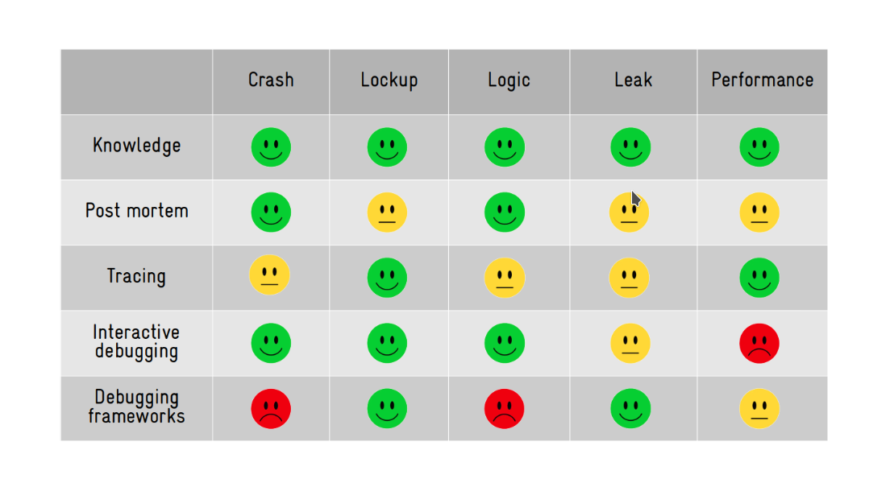

Introduction
Linux Kernel
This page is a placeholder, so that each folder has an page.
Development
This page is a placeholder, so that each folder has an page.
Debugging
This page is a placeholder, so that each folder has an page.
Debugging
This page is a placeholder, so that each folder has an page.
Dynamic Program analysis
What is Dynamic program analysis ?
It is analysis of the properties of a running program. The properties are
- Bugs
- performance
- code coverage
- data flow
These properties are valid for single execution
What is static program analysis ?
It is analysis of properties of program code. These properties are valid for all execution.
Why Dynamic program analysis is better than static ?
-
Static program analysis is better for True positives, but it also generates alot of false positives.
-
Dynamic program analysis is better to avoid false positives, hence the reports are more true positives than static.
The problem with dynamic program analysis is that the coverage is not that good.
DIY Tools
Kernel provides some tools for dynamic program analysis, Enable these configurations in the kernel config and kernel will analyse it for us. If anything fails then we get a bug report in the console.
- CONFIG_DEBUG_LIST=y , adds debug checks for link listss
- CONFIG_FORTIFY_SOURCE=y, finds out of bounds access for simple codes
- BUG_ON(condition) Check if your assumptions in code are true.
- WARN_ON(condition) Check if your assumptions in code are true.
- scrpits/decode_stacktrace.sh - this is usefull for finding line numbers from kernel oops.
There are more configs which can be loaded full list is here - https://events.linuxfoundation.org/wp-content/uploads/2022/10/Dmitry-Vyukov-Dynamic-program-analysis_-LF-Mentorship.pdf (see page 23-25)
KASAN (Kernel Address Sanatizer)
It is used to detect these type of bugs in the kernel
- Out-Of-Bounds
- Use-After-Free
- Heap, stack, globals
It can be enabled in the kernel by setting config CONFIG_KASAN=y
How KASAN works ?
-
Shadow bytes For every 8 bytes of kernel memory, it allocates 1 shadow byte. This shadow byte contains 0 if all bytes can be access (good bytes), 7 if 1 byte out of 8 bytes cannot be accessed (bad byte) and -1 if all the bytes cannot be accessed.

The shadow bytes are stored in a virtual memory section called KASAN shadow.
-
Red-zones around heap objects (to detect out-of-bound errors)

If we try to access the redzones then bug is triggered.
-
Quarantine for heap objects (to detect Use-After-Free)
This delays the reuse of heap blocks, so if the kernel tries to access this block in quarantine then it is Use-After-Free bug.
-
Compiler instrumentation: shadow check before memory access
Compiler adds a code check before any memory access which checks the shadow byte is appropriate (i.e 0 for 8 byte access & 4 for 4 byte access), if incorrect then it is a bug.
This has an overhead, causing 2x slowdown and 2x more memory usage.
Conclusion
In kernel development,
- enable DEBUG_XXX, LOCKDEP, KASAN kernel configuration files
- For new code, try to insert BUG_ON / WARN_ON
- add/run kernel tests
- Use scripts/decode_stacktrace.sh to debug
Fuzzing Linux Kernel
What is Fuzzing ?
Feeding random inputs untill program crashes.

for Fuzzing we need to answer these questions
- How do we execute the program ?
- How do we inject inputs ?
- How do we generate inputs ?
- How do we detect program crashes ?
- How do we automate the whole process ?
except for #3 all others depend on the program that we are Fuzzing.
How do we generate inputs ?
Just generating random data does not always work,
for example: if we are fuzzing an xml parser, the just to generate header
<xml it will take ~2^32 guesses.
So random data does not always work
So there are 3 approaches to generate better inputs
- Structured inputs (structure-aware-fuzzing)
- We build a grammar for inputs and fuzz them.
- Guided generation (coverage-guided-fuzzing)

- We use an existing pool of corpus input or a random input
- We mutate (change) it
- We use it as an input and execute the program
- We check if covers new code ?
- If yes then we add it to Corpus inputs pool
- else we start again from random input.
- Collecting corpus samples and mutating them
- We can scrape the internet and collect inputs.
- These inputs can be mutated and fed into the program.
These approaches can be combined with each other to create new inputs for fuzzing.
Kernel fuzzing
How to inject inputs to kernel ?
To inject inputs we need to understand what inputs does kernel have.
What kind of inputs does kernel have
-
syscalls

- We can use program which calls syscalls to inject syscall input.
-
external inputs i.e usb dev, network packets, firmware etc.

-
We can use userspace or hypervisor/emulator to give external inputs
for ex:
- for usb we can use
/dev/raw-gadget+ Dummy UDC - for network we can use
/dev/tun
- for usb we can use
-
How to generate inputs for kernel ?
Kernel does not accept data as inputs it accepts syscalls.
Most syscalls are used as API i.e
- It is always a sequence of calls
- Argumets to the calls are structured
- Return values or struct are used as inputs in next calls
sequence of calls in the input to the kernel
API-aware fuzzing
- inputs are api call sequences
- these are generated and mutated accordingly
External inputs are also similar to API's.
So most common input structures are
- API
- API with callbacks
- Scripts
- USB-like stuff
Tools used for Fuzzing the kernel
There are other tools but most common are
- Trinity - finds less bugs but easier to deploy
- Syzkaller - goes deeper but finds more bugs and easier to extend
Approaches to fuzzing kernel
- Building kernel code as userspace program and fuzzing that
- Works for code that is separable from kernel, but some kernel code cannot be separated.
- Reusing a userspace fuzzer
- Works for fuzzing blob-like inputs, but most kernel inputs are not blobs
- Using syzkaller
- Good for fuzzing kernel API
- Writing a fuzzer from scratch
- Only benefits when the interface is not API-based.
Tips for using syzkaller
-
Don't just fuzz mainline with the default config
- fuzz with different configs
- fuzz a small number of related syscalls i.e fuzz 3 or 4 syscall related to networking
- Fuzz distro kernels
-
Build your fuzzer on top of syzkaller, extend syzkaller rather than writing your own fuzzer.
-
Reuse parts of the syzkaller for your fuzzer.
How to use syzkaller
Syzkaller is an unsupervised kernel fuzzer that uses both structured fuzzing & coverage-guided fuzzing techniques to apply fuzzing to kernel syscalls.
How it works
Manager controls the test system, spwans vm's with fuzzers inside them which generate small programs which invoke syscalls.
VM's communication using RPC and log the coverage achieved and trace information which is stored in the database.
Describing syscalls
Syzkaller has a separate language for Describing syscalls.
For example: the open() syscall below
int open(const char *pathname, int flags, mode_t mode);
is described in syzkaller as:
open(file ptr[in, filename], flags flags[open_flags], mode flags[open_mode]) fd
-
file ptr[in, filename]: the first argument, called file, is an input pointer containing a filename string. -
flags flags[open_flags]: the flags argument is any of the flags defined at open_flags array open_flags = O_WRONLY, O_RDWR, O_APPEND, ... -
mode flags[open_mode]: mode argument is any of the flags defined at open_mode array open_mode = S_IRUSR, S_IWUSR, S_IXUSR, ... -
fd: the return value will be stored here, to be later used on other syscalls.for example:
read(fd fd, buf buffer[out], count len[buf]) write(fd fd, buf buffer[in], count len[buf])
If instead of fd (file descriptior) we want to fuzz integer values from 0 to 500
then we use syntax int64[0:500]
syzkaller provides generic descrption for ioctl()
ioctl(fd fd, cmd intptr, arg buffer[in])
and also provides specific ones like
ioctl$DRM_IOCTL_VERSION(fd fd_dri, cmd const[DRM_IOCTL_VERSION], arg ptr[in, drm_version])
ioctl$VIDIOC_QUERYCAP(fd fd_video, cmd const[VIDIOC_QUERYCAP], arg ptr[out, v4l2_capability])
See the refernce below for more.
Ref: https://github.com/google/syzkaller/blob/master/docs/syscall_descriptions_syntax.md
Setting up syzkaller
Follow the steps given here to setup syzkaller - https://github.com/google/syzkaller/blob/master/docs/linux/setup.md
Tips for running syzkaller
- Use different defconfigs
- Limit the syscalls to 3-4 chosen, by adding the below in config.config
"enable_syscalls": [ "ptrace", "getpid" ],
Tools and Techniques to Debug an Embedded Linux System
Process of debugging
- Understand the problem.
- Reproduce the problem.
- Identify the root cause.
- Apply the fix.
- Test it. If fixed, celebrate! If not, go back to step 1.
Types of problems in Software
We can classify them into 5 major categories
- Crash. - Fatal exceptions
- Lockup/Hang. - Race conditions, Deadlocks
- Logic/implementation. - Logical errors
- Resource leakage. - Memory leaks
- (Lack of) performance. - Program is not performing as expected.
Tools & Techniques available for developers to solve these problems
- Our brain (aka knowledge).
- Post mortem analysis (logging analysis, memory dump analysis, etc).
- Tracing/profiling (specialized logging).
- Interactive debugging (eg: GDB).
- Debugging frameworks (eg: Valgrind).
Post mortem analysis
This type of analysis is done using the information exported by the system i.e logs, memory dumps etc.
For Kernel Crashes
Method1: addr2line
-
Get the address from the memory dump. address of the
pc(program counter) can be used to get the line where kernel crashed.[ 17.201436] PC is at storage_probe+0x60/0x1a0 [ 17.205810] LR is at storage_probe+0x48/0x1a0 [ 17.210175] pc : [<c06a21cc>] lr : [<c06a21b4>] psr: 60000013 -
You need the
vmlinuxfile which is in ELF format with debug infofile vmlinux vmlinux: ELF 32-bit LSB executable, ARM, EABI5 version 1 (SYSV), statically linked, BuildID[sha1] ca2de68ea4e39ca0f11e688a5e9ff0002a9b7733, with debug_info, not stripped -
Run the addr2line command with these inputs
addr2line -f -p -e vmlinux 0xc06a21ccThis will give you the line number where the kernel crashed.
for eg:
storage_probe at /opt/labs/ex/linux/drivers/usb/storage/usb.c:1118
Method2: gdb list
-
Get the function name + offset from the memory dump.
[ 17.201436] PC is at storage_probe+0x60/0x1a0 [ 17.205810] LR is at storage_probe+0x48/0x1a0 [ 17.210175] pc : [<c06a21cc>] lr : [<c06a21b4>] psr: 60000013i.e
storage_probe+0x60 -
You need the
vmlinuxfile which is in ELF format with debug infofile vmlinux vmlinux: ELF 32-bit LSB executable, ARM, EABI5 version 1 (SYSV), statically linked, BuildID[sha1] ca2de68ea4e39ca0f11e688a5e9ff0002a9b7733, with debug_info, not stripped -
Run gdb on the vmlinux file, inside gdb run the command
(gdb) list *(storage_probe+0x60)This will show you the line where the kernel crashed.
For Userspace Crashes
Use the core dump from the segfault to find the line at which the segfault occurred.
-
Set the system limits to unlimited
# ulimit -c unlimited -
Run the program untill it crashes, the crash will generate a file called
corewhich contains the core dump. -
Run the gdb on the core file and the program with debug symbols
gdb <program-here> -c core -
In gdb run the command
listto go to the line where the program crashed.pto print the specific variables.
Tracing
Tracing is a special form of logging, where data about the state and execution of a program (or the kernel) is collected and stored for runtime (or later) analysis.
Using print() or printk() statements to log the state and variables is also a form of tracing.
For kernel crashes
-
for kernel tracing we need to configure the kernel tracing options
zcat /proc/config.gz | grep TRACER=y CONFIG_NOP_TRACER=y CONFIG_HAVE_FUNCTION_TRACER=y CONFIG_HAVE_FUNCTION_GRAPH_TRACER=y CONFIG_CONTEXT_SWITCH_TRACER=y CONFIG_GENERIC_TRACER=y CONFIG_FUNCTION_TRACER=y CONFIG_FUNCTION_GRAPH_TRACER=y CONFIG_STACK_TRACER=y CONFIG_IRQSOFF_TRACER=y CONFIG_SCHED_TRACER=y CONFIG_HWLAT_TRACER=y CONFIG_OSNOISE_TRACER=y CONFIG_TIMERLAT_TRACER=y -
Mount the tracefs into the fs
mount -t tracefs tracefs /sys/kernel/tracing/ -
Record the traces of the function getting executed
trace-cmd record -p function_graph -F <module>/<sysfs trigger to a module> -
Generate the report of the tracing
trace-cmd report > trace.log -
Examine the trace.log to see the traces of the function.
Note: This is dynamic tracing i.e the tracing is enabled at runtime as long as the kernel is compiled with the correct configuration.
For userspace crashes
Method 1: strace
Using strace we can trace all the system calls the program is running to debug the program.
Run a userspace program with strace
# strace <program>
Method 2: Uprobe
This is used to trace the functions in the program.
-
Kernel needs to be configured with the below options
zcat /proc/config.gz | grep CONFIG_UPROBE CONFIG_UPROBES=y CONFIG_UPROBE_EVENTS=y -
Add the tracepoints to all the functions
# for f in `perf probe -F -x <program>`; \ do perf probe -q -x <program> $f; done -
List the tracepoints to know the tracepoint names
# perf probe -l | tee -
Run the application and capture the tracepoints.
# perf record -e <tracepoint_name>:* -aR -- <program> <args> -
Run the command to parse the trace
perf script | tee
Interactive Debugging
An interactive debugging tool allows us to interact with the application at runtime. It can execute the code step-by-step, set breakpoints, display information (variables, stack, etc), list function call history (backtrace), etc.
GDB is the go to tool for Interactive debugging.
For kernel space
Note: If running on embedded, you need a gdbserver running on the target device and a gdb client on the host device.
-
Enable KGDB in the kernel
# zcat /proc/config.gz | grep ^CONFIG_KGDB CONFIG_KGDB=y CONFIG_KGDB_HONOUR_BLOCKLIST=y CONFIG_KGDB_SERIAL_CONSOLE=yKGDB has registered serial console as the port for communication. But we can use kgdb/agent-proxy to forward text console over IP.
Details on how to connect can be found here - https://kernel.googlesource.com/pub/scm/utils/kernel/kgdb/agent-proxy/+/refs/heads/master/README.TXT
-
On target machine, Put the kernel in debugging mode
# Enable the serial port for kgdb communication # echo ttymxc0 > /sys/module/kgdboc/parameters/kgdboc # Put the kernel in debug mode # echo g > /proc/sysrq-trigger -
On host machine, run gdb with the kernel ELF
gdb vmlinux -tui-tuioption opens the TUI which shows the code and line number in gdb
-
In gdb prompt, run the command to connect to the target machine
(gdb) target remote localhost:5551 -
This will connect and open up the gdb for debugging, now you can set breakpoints get backtraces using gdb commands.
For userspace crashes
Note: If running on embedded, you need a gdbserver running on the target device and a gdb client on the host device.
-
Start the gdbserver, on target device
gdbserver :1234 <program> -
On the host device, run gdb with the program in ELF format
gdb <program> -tui -
In gdb prompt, connect to the target device
(gdb) target remote <IP>:1234 -
Now we can set breakpoints and see the backtrace of the program running on the target machine.
Debugging frameworks
Collection of tools when used to debug linux systems are called debugging frameworks.
Kernel has several debugging frameworks to identify memory leaks, lockups, etc (see the "Kernel Hacking" configuration menu)
In user space, there is Valgrind for debugging memory leaks, race conditions and profiling etc.
For kernel crashes
-
Enable the detections in the kernel configuration
# zcat /proc/config.gz | grep "CONFIG_SOFTLOCKUP_DETECTOR\|CONFIG_DETECT_HUNG_TASK" CONFIG_SOFTLOCKUP_DETECTOR=y CONFIG_DETECT_HUNG_TASK=y -
Once enabled, when something hangs for 30s or more, kernel will throw an oops.
-
After this we can use the steps in post mortem analysis to debug.
For userspace crashes
We use valgring to check for memory leaks, profiling , etc
For eg:
valgrind --leak-check=full <program>
This will check for leaks etc..
Which tool to use while debugging ?
This depends on what type of problem you are debugging.

References
Ref: https://www.youtube.com/watch?v=Paf-1I7ZUTo
Understanding Linux kernel Oops
Kernel panic is when there is a fatal error from which the kernel cannot recover. So it forces the system into controlled system hang/reboot.
There are 2 types of panics
- Hard panics (Aiee!)
- Soft panics (Oops!)
Oops
On faulty code execution or when an exception occurs kernel throws Oops.
When Oops occurs it dumps the message on the console. Message contains the CPU registers & the processor status of when the Oops occured.
The process that triggered the Oops gets killed ungracefully. There is a chance that the system may not resume from the Oops.
Understanding Oops Dump
We will be using the sample Oops dump below, this oops is generated from the kernel panic module from the Task of the mentorship.
[ 96.106469] panic_msg: loading out-of-tree module taints kernel.
[ 96.106525] panic_msg: module verification failed: signature and/or required key missing - tainting kernel
[ 96.106710] Panic module init.
[ 96.106713] BUG: kernel NULL pointer dereference, address: 0000000000000001
[ 96.106718] #PF: supervisor read access in kernel mode
[ 96.106721] #PF: error_code(0x0000) - not-present page
[ 96.106723] PGD 0 P4D 0
[ 96.106728] Oops: 0000 [#1] SMP NOPTI
[ 96.106732] CPU: 1 PID: 7403 Comm: insmod Kdump: loaded Tainted: G OE 5.15.0-72-generic #79~20.04.1-Ubuntu
[ 96.106737] Hardware name: ASUSTeK COMPUTER INC. ROG Zephyrus G14 GA401IH_GA401IH/GA401IH, BIOS GA401IH.212 03/14/2022
[ 96.106740] RIP: 0010:panic_module_init+0x15/0x1000 [panic_msg]
[ 96.106749] Code: Unable to access opcode bytes at RIP 0xffffffffc1470feb.
[ 96.106752] RSP: 0018:ffffaa368299bbb8 EFLAGS: 00010246
[ 96.106755] RAX: 0000000000000012 RBX: 0000000000000000 RCX: 0000000000000027
[ 96.106758] RDX: 0000000000000000 RSI: ffffaa368299ba00 RDI: ffff88d4d7460588
[ 96.106761] RBP: ffffaa368299bbb8 R08: ffff88d4d7460580 R09: 0000000000000001
[ 96.106763] R10: 696e6920656c7564 R11: 6f6d2063696e6150 R12: ffffffffc1471000
[ 96.106766] R13: ffff88cfd734d390 R14: 0000000000000000 R15: ffffffffc1884000
[ 96.106768] FS: 00007f241ee73740(0000) GS:ffff88d4d7440000(0000) knlGS:0000000000000000
[ 96.106772] CS: 0010 DS: 0000 ES: 0000 CR0: 0000000080050033
[ 96.106775] CR2: ffffffffc1470feb CR3: 000000023ecac000 CR4: 0000000000350ee0
[ 96.106778] Call Trace:
[ 96.106780] <TASK>
[ 96.106784] do_one_initcall+0x48/0x1e0
[ 96.106791] ? __cond_resched+0x19/0x40
[ 96.106797] ? kmem_cache_alloc_trace+0x15a/0x420
[ 96.106804] do_init_module+0x52/0x230
[ 96.106810] load_module+0x1294/0x1500
[ 96.106819] __do_sys_finit_module+0xbf/0x120
[ 96.106823] ? __do_sys_finit_module+0xbf/0x120
[ 96.106830] __x64_sys_finit_module+0x1a/0x20
[ 96.106835] do_syscall_64+0x5c/0xc0
[ 96.106840] ? exit_to_user_mode_prepare+0x3d/0x1c0
[ 96.106845] ? syscall_exit_to_user_mode+0x27/0x50
[ 96.106849] ? __x64_sys_mmap+0x33/0x50
[ 96.106853] ? do_syscall_64+0x69/0xc0
[ 96.106857] ? syscall_exit_to_user_mode+0x27/0x50
[ 96.106861] ? __x64_sys_read+0x1a/0x20
[ 96.106865] ? do_syscall_64+0x69/0xc0
[ 96.106870] ? irqentry_exit+0x1d/0x30
[ 96.106874] ? exc_page_fault+0x89/0x170
[ 96.106879] entry_SYSCALL_64_after_hwframe+0x61/0xcb
[ 96.106885] RIP: 0033:0x7f241efa0a3d
[ 96.106889] Code: 5b 41 5c c3 66 0f 1f 84 00 00 00 00 00 f3 0f 1e fa 48 89 f8 48 89 f7 48 89 d6 48 89 ca 4d 89 c2 4d 89 c8 4c 8b 4c 24 08 0f 05 <48> 3d 01 f0 ff ff 73 01 c3 48 8b 0d c3 a3 0f 00 f7 d8 64 89 01 48
[ 96.106894] RSP: 002b:00007ffdbfab5128 EFLAGS: 00000246 ORIG_RAX: 0000000000000139
[ 96.106899] RAX: ffffffffffffffda RBX: 000055fd2f8b4780 RCX: 00007f241efa0a3d
[ 96.106903] RDX: 0000000000000000 RSI: 000055fd2e243358 RDI: 0000000000000003
[ 96.106906] RBP: 0000000000000000 R08: 0000000000000000 R09: 00007f241f0a3180
[ 96.106909] R10: 0000000000000003 R11: 0000000000000246 R12: 000055fd2e243358
[ 96.106912] R13: 0000000000000000 R14: 000055fd2f8b7b40 R15: 0000000000000000
[ 96.106918] </TASK>
Let's try to understand the Oops dump.
-
BUG: kernel NULL pointer dereference, address: 0000000000000001- This indicates why the kernel crashed i.e it was because of NULL pointer dereference.
-
IP:- IP shows the address of the instruction pointer. The above dump does not have IP. So in some cases IP maybe missing.
-
Oops: 0000 [#1] SMP NOPTI-
0000- is the error code value in Hex , where- bit 0 - 0 means no page found, 1 means protection fault
- bit 1 - 0 means read, 1 means write
- bit 2 - 0 means kernelspace, 1 means userspace
The above code denotes that while reading there was no page found in kerenelspace i.e NULL pointer dereference.
-
[#1]- Number of Oops occured. There can be multiple Oops as cascading effect. 1 Oops occured.
-
-
CPU: 1 PID: 7403 Comm: insmod Kdump: loaded Tainted: G-
CPU 1- Which CPU the error occured -
Tainted: G- Tainted flag- P, G — Proprietary module has been loaded.
- F — Module has been forcibly loaded.
- S — SMP with a CPU not designed for SMP.
- R — User forced a module unload.
- M — System experienced a machine check exception.
- B — System has hit bad_page.
- U — Userspace-defined naughtiness.
- A — ACPI table overridden.
- W — Taint on warning.
Ref: https://github.com/torvalds/linux/blob/master/kernel/panic.c
This shows that the proprietary module has been loaded.
-
-
RIP: 0010:panic_module_init+0x15/0x1000 [panic_msg]RIP- CPU register containing addr of the instruction getting executed.0010- Code segment register value.panic_module_init+0x15/0x1000-+ offset/ length
-
CPU register contents
RSP: 0018:ffffaa368299bbb8 EFLAGS: 00010246 RAX: 0000000000000012 RBX: 0000000000000000 RCX: 0000000000000027 RDX: 0000000000000000 RSI: ffffaa368299ba00 RDI: ffff88d4d7460588 RBP: ffffaa368299bbb8 R08: ffff88d4d7460580 R09: 0000000000000001 R10: 696e6920656c7564 R11: 6f6d2063696e6150 R12: ffffffffc1471000 R13: ffff88cfd734d390 R14: 0000000000000000 R15: ffffffffc1884000 FS: 00007f241ee73740(0000) GS:ffff88d4d7440000(0000) knlGS:0000000000000000 CS: 0010 DS: 0000 ES: 0000 CR0: 0000000080050033 CR2: ffffffffc1470feb CR3: 000000023ecac000 CR4: 0000000000350ee0 -
Stack:- This is the stack trace.- But as you can see it is missing from the dump. This might be because the kernel is not configured correctly, but I am currently unable to get the exact config which enables stack.
-
Code: 5b 41 5c c3 66 0f 1f 84 00 00 00 00 00 f3 0f 1e fa 48 89 f8 48 89 f7 48 89 d6 48 89 ca 4d 89 c2 4d 89 c8 4c 8b 4c 24 08 0f 05 <48> 3d 01 f0 ff ff 73 01 c3 48 8b 0d c3 a3 0f 00 f7 d8 64 89 01 48- This is a hex-dump of the section of machine code that was being run at the time the Oops occurred.
Debugging the Oops
The aim here is to find out the Address where the Oops occured, so that we can use GDB to get the exact line of the code where the kernel Oops occured.
Method 1: Using the Oops dump + GDB
Logic behind this method
- RIP/PC - Instruction pointer or Program counter will give the instruction address and offset. Addresss + offset = Instruction Addr where Oops occured.
- Use GDB to dissassemble the function (this we get in the RIP line of Oops dump)
- Once we get the address then use GDB
listto get to the line of the code.
Steps:
- Load the module in GDB
- Add the symbol-file in GDB
- Disassemble the function mentioned in the
RIPsection in the above dump. - To get the exact line we use (RIP instruction addr + offset)
- Then we run list *(RIP instruction addr + offest) to give the offending code.
Honestly this method seems to be a bit complex, a simpler way would be to use
addr2line to convert the address to line. For more see the video
- https://youtu.be/X5uygywNcPI?t=1159
Method 2: Using System.map + GDB
System.map is the list of symbols and their addr in the kernel.
Logic behind this method
- Using the function name from the Oops dump, get the symbol address from the System.map. we call it Fun_Addr
- Get the exact instruction address by Fun_Addr + Offset (from oops dump)
- Dissassemble the function to get to the exact instruction where it failed.
- To get to the line number use GDB
list& pass it Fun_Addr + Offset.
Steps
- Identify the PC/RIP (Addr & offset) from the Oops dump.
- Identify the function where the Oops occured from the Oops dump.
- Get the exact instruction address by Fun_Addr + Offset (from oops dump)
- Dissassemble the function to get to the exact instruction where it failed.
- To get to the line number use GDB
list& pass it Fun_Addr + Offset.
Ways of Dissassembling
- Using
objdump - Using
gdb
objdump
objdump -D -S --show-raw-insn --prefix-addresses --line-numbers vmlinux
gdb
# Run gdb
gdb –silent vmlinux
# Inside gdb run the command
dissassemble <function-name>
TLDR; Summary

References
Ref: https://www.opensourceforu.com/2011/01/understanding-a-kernel-oops/ Ref: https://sanjeev1sharma.wordpress.com/tag/debug-kernel-panics/